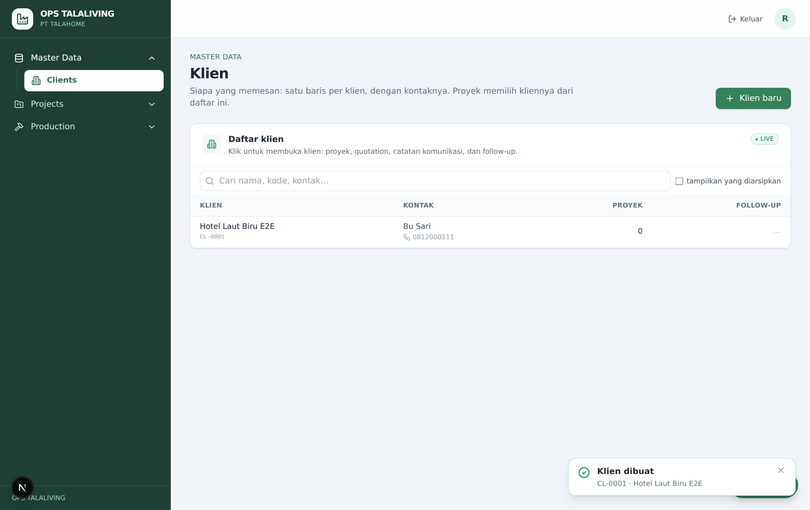
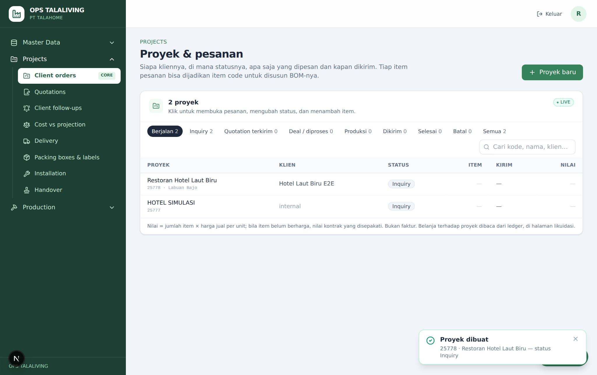
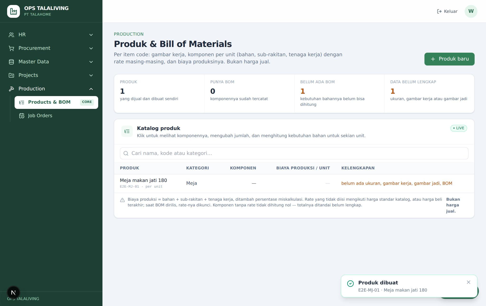
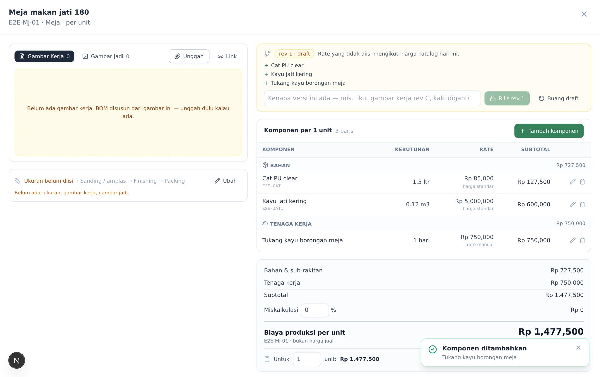
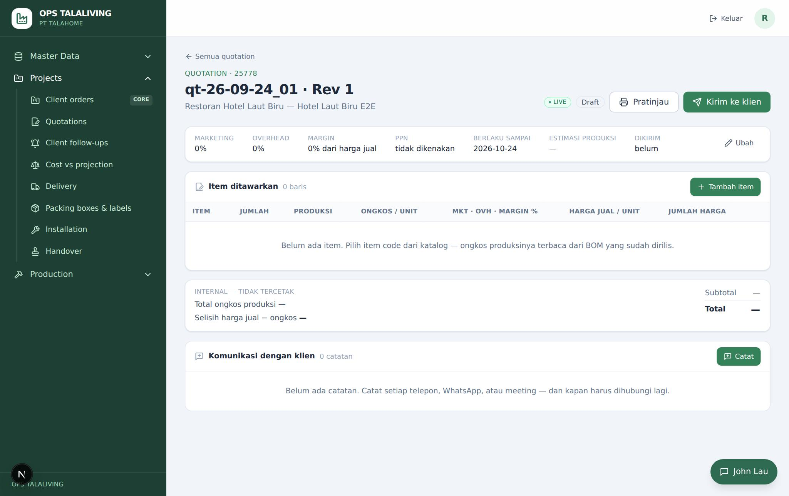
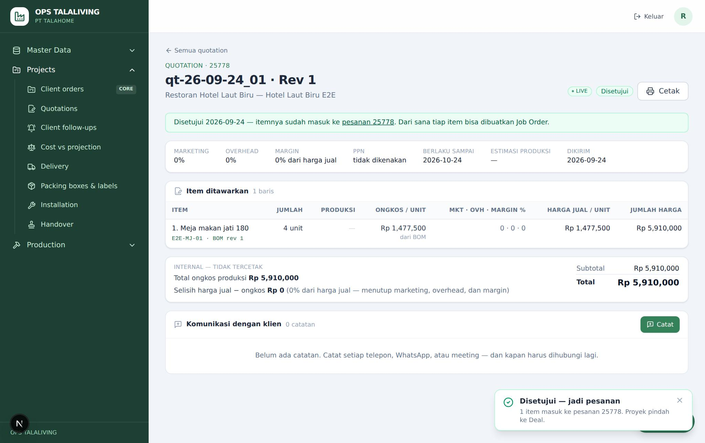
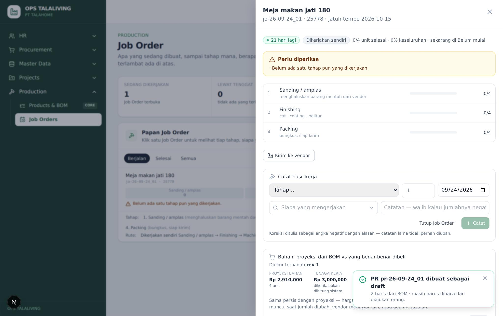
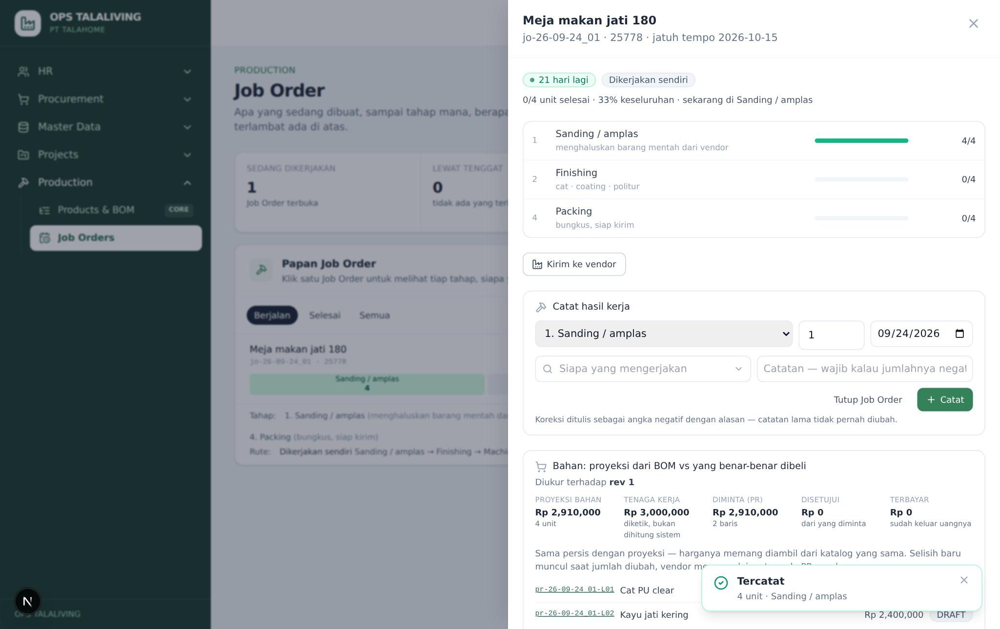
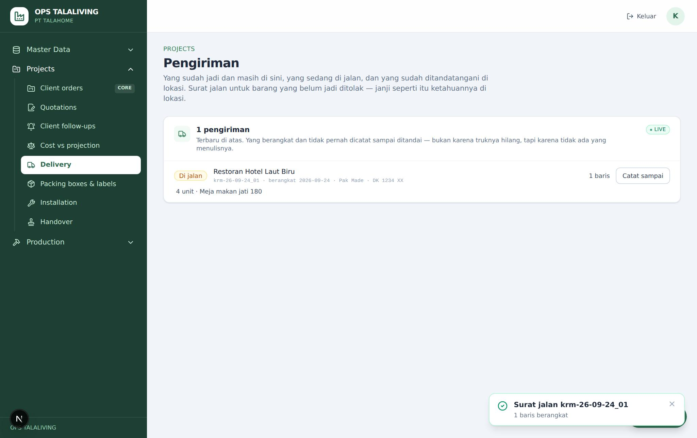
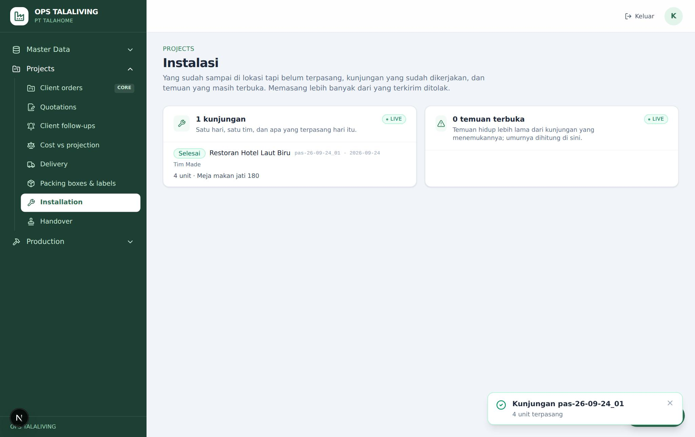

Cara memakai sistem produksi, langkah demi langkah: klien dan proyek, produk dan BOM, quotation, Job Order, bahan dari BOM, progres dan vendor, peti, surat jalan, pemasangan, sampai BAST ditandatangani. Setiap langkah di dokumen ini sudah dijalankan dalam simulasi terhadap database yang sama dengan sistem live.
Versi 24 September 2026 · dibuat otomatis dari tabel pengetahuan John Lau (ops_asst.processes). Gambar diambil dari uji jalan lewat layar live (19 langkah, 2026-09-24) dengan data uji; yang tidak ada di uji jalan diambil dari mode demo.
1. Klien dan proyek (order)
2. Produk, tahap produksi dan BOM
3. Quotation ke klien
4. Job Order (SPK)
5. Bahan: PR dari BOM
6. Progres produksi dan vendor
7. Mengemas peti dan label
8. Surat jalan dan barang sampai
9. Pemasangan dan temuan
10. Serah terima (BAST)
Sebelum mulai
Siapa mengerjakan apa. Sales/PM (akses project) mencatat klien, proyek, quotation dan serah terima. PPIC/mandor (akses production, dan procurement untuk PR) membuat produk dan BOM, Job Order, mencatat progres dan vendor. Tim pengiriman (akses delivery) mengemas peti, membuat surat jalan, mencatat sampai dan pemasangan. BAST hanya dicatat oleh yang memegang wewenang serah terima proyek.
Status proyek bergerak sendiri. INQUIRY → QUOTATION_SENT (quotation dikirim) → DEAL (disetujui) → IN_PRODUCTION (Job Order pertama) → SHIPPED (surat jalan pertama) → DONE (BAST). Surat jalan hanya boleh berisi yang sudah selesai dibuat, jadi Job Order dibuat dari baris order dan semua tahapnya dicatat.
Tanya John Lau kapan saja. Tombol John Lau ada di pojok kanan bawah setiap halaman. Tanyakan "SPK mana yang terlambat?", "sudah sampai mana pengiriman ke klien?" atau "kenapa surat jalan saya ditolak?". Panduannya tetap terbuka saat Anda pindah halaman, dan langkah yang sesuai dengan halaman yang sedang dibuka ditandai you are here. Percakapan tersimpan, jadi tidak hilang walaupun halaman di-refresh.
Angka dibaca dari layarnya. John Lau menjawab Job Order yang lewat tanggal dan progres pengiriman per proyek langsung dari data yang sama dengan layar Produksi dan Serah terima, sesuai akses Anda.
Setiap pesanan dimulai sebagai proyek milik seorang klien. Status proyek bergerak sendiri mengikuti pekerjaan: INQUIRY → QUOTATION_SENT (quotation dikirim) → DEAL (disetujui) → IN_PRODUCTION (Job Order pertama) → SHIPPED (surat jalan pertama) → DONE (BAST).
Buka Master data → Clients, tekan Klien baru, isi nama klien, kontak, telepon dan alamat, lalu Simpan. Klien juga bisa dibuat langsung dari laci proyek.
Kenapa: Nama klien wajib (name_required); nama yang sudah ada ditolak (client_exists).
— → klien baru

Buka Proyek → Order, tekan Proyek baru. Pilih klien, isi lokasi, penanggung jawab, tanggal mulai dan jadwal kirim, lalu Simpan.
Kenapa: Kosongkan kode proyek untuk nomor otomatis. Jadwal kirim sebelum tanggal mulai ditolak (dates_reversed).
— → INQUIRY

Tanya-jawab
Apakah status proyek perlu diubah manual? Biasanya tidak. Status bergerak sendiri: quotation dikirim, disetujui, Job Order pertama, surat jalan pertama, dan BAST. Tombol status di laci proyek untuk koreksi atau pembatalan (dengan alasan).
Produk (item code) adalah yang dibuat bengkel. BOM-nya berisi bahan dari database items dan tenaga kerja dengan tarifnya, dirilis sebagai revisi. Tahap produksi dicentang per produk: meja tanpa lampu atau kabel tidak melewati Machinery.
Buka Produksi → BOM, tekan Produk baru. Isi item code, kategori, nama, satuan dan ukuran, centang tahap produksi yang dilewati, lalu Simpan. Produk juga bisa dibuat dari baris order dengan Jadikan item code.
Kenapa: Item code tidak pernah diubah lagi. Tanpa centang, Job Order-nya menunggu keempat tahap termasuk Machinery.
— → produk tanpa BOM

Buka produknya, tekan Tambah komponen. Pilih Dari database items untuk bahan (jumlah, satuan, susut) atau Tenaga kerja untuk upah (nama, satuan, tarif), lalu Tambah.
Kenapa: Tenaga kerja tanpa tarif ditolak (rate_required). Barang yang belum ada di database bisa dibuat dengan "Buat item".
— → draft BOM

Isi catatan rilis, lalu tekan Rilis rev N.
Kenapa: Catatan wajib (note_required). Harga bahan diambil dari harga standar atau terakhir di database items; baris tanpa harga menahan rilis (unpriced_lines).
Quotation dihitung dari biaya BOM yang dirilis ditambah persen marketing, overhead dan margin. Dikirim ke klien, dan kalau disetujui, itemnya langsung menjadi baris order proyek.
Buka Proyek → Quotation, tekan Quotation baru, pilih proyek, lalu Buat draft.
Kenapa: Satu proyek hanya punya satu draft (draft_exists).
— → DRAFT

Di quotation itu tekan Tambah item: item code, jumlah, satuan, lalu simpan. Harga jual dihitung dari biaya BOM ditambah persen; bisa ditetapkan manual.
Kenapa: Item tanpa biaya (BOM belum dirilis dan tanpa ongkos manual) menahan pengiriman (cost_missing).
DRAFT → DRAFT
Tekan Kirim ke klien.
Kenapa: Quotation tanpa item ditolak (no_lines). Proyek pindah ke QUOTATION_SENT.
DRAFT → SENT
Kalau klien setuju tekan Disetujui; kalau menolak tekan Ditolak, tulis alasannya, lalu Catat ditolak. Untuk mengubah harga setelah dikirim pakai Revisi.
Kenapa: Menolak wajib beralasan (reason_required). Disetujui menyalin item menjadi baris order dan memindahkan proyek ke DEAL.
SENT → ACCEPTED / REJECTED

Tanya-jawab
Quotation tidak bisa dikirim karena "cost_missing". Ada item yang belum punya biaya: BOM produknya belum dirilis, atau item tanpa item code belum diberi ongkos manual. Rilis BOM-nya di Produksi → BOM, atau isi ongkos manual per unit.
Job Order dibuat dari baris order proyek, sehingga yang dibuat bengkel terhitung terhadap yang dipesan klien. Job Order mengunci revisi BOM yang dirilis terakhir.
Buka proyeknya di Proyek → Order. Pada baris order tekan Buat Job Order, isi jumlah, jatuh tempo dan rute (Bengkel sendiri / Lewat vendor), lalu Buat.
Kenapa: Tombol muncul setelah baris punya item code. Job Order dari baris order ikut terhitung "sudah dibuat" saat surat jalan; Job Order yang dibuat di Produksi → Jadwal tanpa proyek tidak.
Kebutuhan bahan satu Job Order dihitung dari BOM-nya (dengan susut) dan dijadikan draft PR. Tiap baris membawa nomor Job Order dan item-nya, supaya proyeksi dan belanja nyata bisa dibandingkan.
Buka Produksi → Jadwal, klik Job Order-nya, lalu di bagian bahan tekan Buat PR dari BOM.
Kenapa: Butuh akses procurement. PR dibuat sebagai draft: tiap baris membawa nomor Job Order dan item-nya; tenaga kerja tidak ikut.
— → PR DRAFT

Buka PR itu di Procurement → Requests, periksa jumlah dan harga, lalu Submit for approval. Selanjutnya mengikuti SOP procurement.
PR DRAFT → SUBMITTED
Tanya-jawab
Tombol "Buat PR dari BOM" tidak muncul. Tombol itu hanya untuk yang punya akses procurement, karena yang dibuat adalah permintaan pembelian. Job Order juga harus masih OPEN dan produknya punya BOM yang dirilis.
Progres dicatat per tahap per hari. Barang yang dikerjakan di luar (finishing, jok) dicatat keluar ke vendor dan kembali. Job Order ditutup setelah semua tahapnya selesai.
Di laci Job Order pilih tahap, isi jumlah, tanggal dan siapa yang mengerjakan, lalu Catat.
Kenapa: Tahap yang tidak dilewati produk ditolak (stage_not_on_product). Melebihi jumlah order ditolak (over_order). Koreksi pakai jumlah negatif dengan catatan.

Untuk dikerjakan di vendor (misalnya finishing atau jok): pada Job Order bengkel sendiri tekan Kirim ke vendor dulu. Pilih proses dan vendor, isi jumlah dan tanggal dijanjikan kembali, lalu Catat dikirim. Saat kembali tekan Catat kembali.
Kenapa: Tanggal janji di masa lalu ditolak (promise_in_past). Yang kembali tidak boleh melebihi yang dikirim (over_sent).
— → di vendor → kembali
Setelah semua tahap selesai tekan Tutup Job Order, lalu Tutup.
Kenapa: Menutup sebelum selesai wajib beralasan.
OPEN → DONE
Tanya-jawab
Kenapa Job Order meja saya masih menunggu tahap Machinery? Produknya belum punya daftar tahap sendiri, jadi ikut keempat tahap rutenya. Buka produk di Produksi → BOM, tekan "Ubah", centang hanya tahap yang benar-benar dilewati (misalnya Amplas, Finishing, Packing), lalu simpan. Tahap yang sudah punya progres di Job Order terbuka tidak bisa dibuang sampai Job Order itu ditutup.
Barang jadi dikemas per peti dengan tujuan di dalam gedung klien dan isinya. Tiap peti punya label dengan QR yang dibuka tim di lokasi.
Buka Proyek → Peti, tekan Kemas peti. Pilih proyek, isi tujuan di dalam gedung dan isi peti, lalu Kemas & beri label. Cetak labelnya dengan Cetak label.
Kenapa: Tujuan dan isi wajib (destination_required, contents_required).
Surat jalan hanya boleh berisi yang sudah selesai dibuat. Sampai di lokasi dicatat dengan foto surat jalan yang ditandatangani penerima.
Buka Proyek → Pengiriman, tekan Buat surat jalan. Isi jumlah per baris, centang peti yang ikut, isi sopir dan kendaraan, lalu Berangkatkan N.
Kenapa: Tidak boleh melebihi yang sudah selesai dibuat (not_enough_made). Proyek pindah ke SHIPPED.
— → IN_TRANSIT

Saat sampai tekan Catat sampai, isi penerima, unggah foto surat jalan bertanda tangan (dan foto barang kalau ada), lalu Simpan.
Kenapa: Foto surat jalan yang ditandatangani wajib (surat_jalan_required).
IN_TRANSIT → ARRIVED
Di lokasi, scan QR di label peti lalu tekan Sampai di site; setelah dipasang tekan Terpasang, atau Ada masalah kalau isinya kurang atau rusak.
IN_TRANSIT → ON_SITE / INSTALLED / PROBLEM
Tanya-jawab
Surat jalan ditolak "not_enough_made", padahal barangnya sudah ada. Surat jalan menghitung yang sudah selesai dibuat dari Job Order yang dibuat dari baris order itu, sampai tahap terakhirnya. Pastikan Job Order dibuat dari baris order (bukan dari Jadwal tanpa proyek) dan semua tahapnya sudah dicatat.
Pemasangan dicatat per kunjungan: berapa unit terpasang dan oleh tim siapa. Yang salah dicatat sebagai temuan dan ditutup dengan keterangan perbaikannya.
Buka Proyek → Instalasi, tekan Catat pemasangan. Isi jumlah terpasang per baris dan tim yang datang; kalau ada yang salah, tulis temuannya dan tingkatnya. Lalu Catat N unit terpasang.
Kenapa: Tidak boleh memasang lebih dari yang sudah di lokasi (not_enough_on_site).
— → terpasang

Setelah diperbaiki, pada temuan itu tekan Tutup, tulis apa yang dikerjakan dan siapa yang memperbaiki, lalu Simpan.
Serah terima dicatat dengan BAST yang sudah ditandatangani kedua pihak. Setelah itu proyek selesai (DONE).
Buka Proyek → Serah terima, tekan Serah terima. Isi yang tanda tangan dari klien dan dari kita, unggah BAST yang sudah ditandatangani, lalu Catat serah terima.
Kenapa: Butuh wewenang serah terima proyek; tim pengiriman saja ditolak (not_permitted). BAST wajib (bast_required).